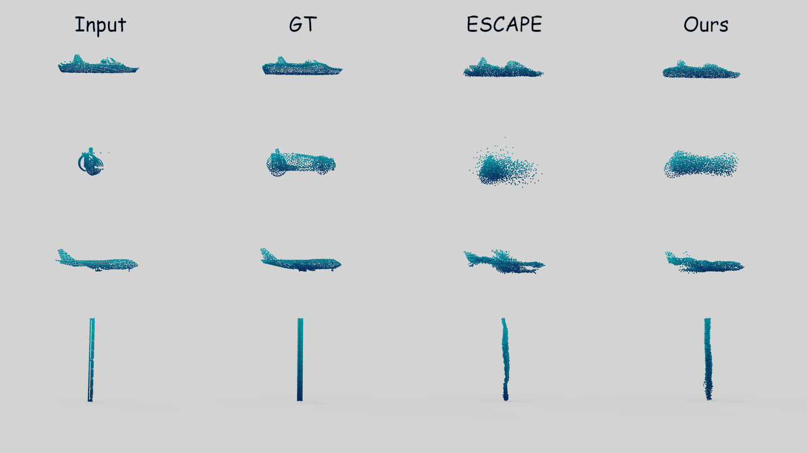
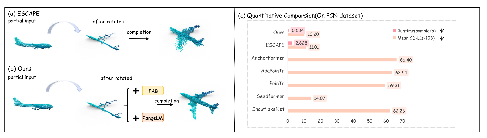
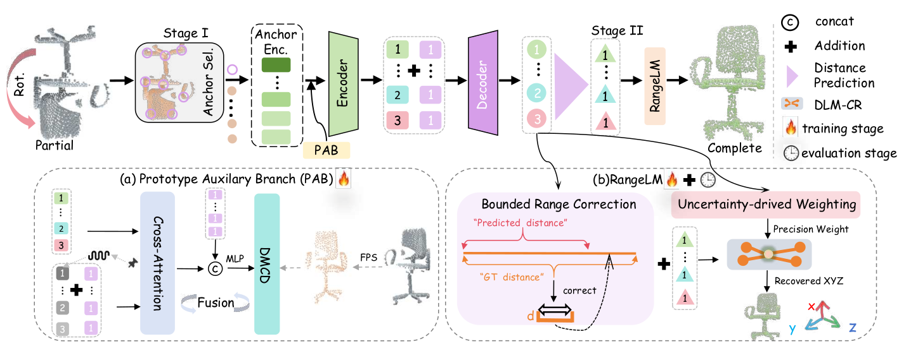
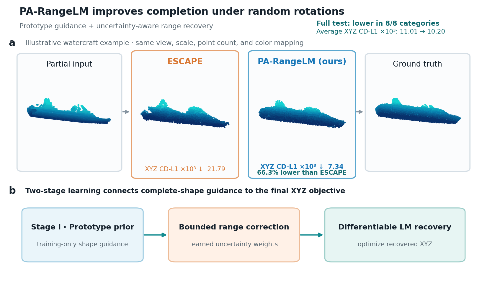

10.20
CD-L1 ×103 ↓
Rotated PCN full test split
Rotation-Robust Point Cloud Completion
Prototype-Guided Differentiable Range Optimization for Rotation-Robust Geometric Reconstruction
Learn completion in range space, then recover Cartesian geometry directly in the observed pose.
A training-only prototype branch supplies complete-shape guidance, while uncertainty-aware range correction and differentiable coordinate recovery remove the need for a separate pose canonicalizer.

10.20
CD-L1 ×103 ↓
Rotated PCN full test split
4.92×
Faster end-to-end
2.628 s → 0.534 s per sample
7.4%
Lower error vs. latest
11.01 → 10.20 CD-L1
27.5%
Lower error vs. earlier
14.07 → 10.20 CD-L1
A controlled comparison
ESCAPE-Reprod.11.01
Observed-frame recovery10.20
SeedFormer 14.07 → Ours 10.20
27.5% lower CD-L1; lower is better.The core idea
The model separates representation learning from geometric recovery, so full-shape cues improve the predictor without adding an inference-time branch.
A training-only auxiliary branch uses sparse complete-shape targets to regularize the shared representation. It is removed after training, leaving inference unchanged.
Training signal, zero deployment costRangeLM predicts small, bounded adjustments to base distances instead of unconstrained coordinates. A learned uncertainty head assigns relative precision to each anchor constraint.
Correct what matters, weight what is reliableA vectorized Levenberg–Marquardt solver maps corrected ranges back to XYZ. Gradients through the final iterations align distance prediction with the reconstruction objective.
Observed pose in, observed pose outSystem design
Stage I learns a shape-aware range representation. Stage II freezes that representation and trains bounded correction, uncertainty weighting, and dense coordinate recovery.


Quantitative results
| Category | SnowflakeNetICCV 2021 | SeedFormerECCV 2022 | PoinTrICCV 2021 | AdaPoinTrTPAMI 2023 | AnchorFormerCVPR 2023 | ESCAPECVPR 2025 | ESCAPE-Reprod.Latest baseline | PA-RangeLMOurs |
|---|---|---|---|---|---|---|---|---|
| Plane | 70.49 | 16.39 | 63.81 | 65.34 | 66.15 | 8.60 | 8.98 | 7.58 |
| Cabin | 57.42 | 11.72 | 58.04 | 65.11 | 67.59 | 13.62 | 13.89 | 13.04 |
| Car | 56.23 | 11.40 | 54.14 | 56.17 | 60.81 | 10.43 | 10.77 | 10.07 |
| Chair | 59.31 | 13.02 | 60.07 | 63.73 | 67.88 | 10.71 | 11.15 | 10.36 |
| Lamp | 69.61 | 17.68 | 64.74 | 68.33 | 68.39 | 8.14 | 8.61 | 7.93 |
| Sofa | 63.22 | 15.35 | 61.70 | 66.69 | 70.06 | 13.86 | 14.45 | 13.90 |
| Table | 63.35 | 14.79 | 62.94 | 72.52 | 76.64 | 9.23 | 9.87 | 9.09 |
| Boat | 58.40 | 12.21 | 49.07 | 50.42 | 53.68 | 10.00 | 10.36 | 9.60 |
| Average | 62.26 | 14.07 | 59.31 | 63.54 | 66.40 | 10.58 | 11.01 | 10.20 |
A closer look
Range correction reduces scattered geometry while preserving the observed orientation. The comparison uses the same view, scale, point count, and color mapping.

Anonymous release
The public package is stripped of identities, local paths, logs, third-party source trees, and tracking metadata.
Keep this tab open while the four anonymous weight parts are combined locally in your browser.